Definitions
- An operator
 with dense domain
with dense domain 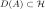
. Its adjoint: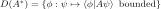
,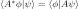
. - Symmetric:
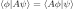
on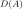
, i.e.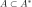
. Self-adjoint: (same domain) (von Neumann 1930). Essentially self-adjoint: closure is self-adjoint.
(same domain) (von Neumann 1930). Essentially self-adjoint: closure is self-adjoint. - Hellinger–Toeplitz: a symmetric operator defined on all of
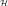
is bounded. Hence and
and 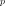
are necessarily defined on proper domains.
Theorem (spectral)
For every self-adjoint there is a unique projection-valued measure  on the Borel sets of
on the Borel sets of
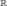
, supported on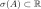
, with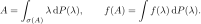
in state  gives a value in
gives a value in  is
is 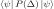
. For position,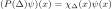
: no eigenvectors needed.Example: why domains matter
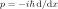
on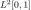
. On functions vanishing at both ends it is symmetric but not self-adjoint; its self-adjoint extensions are labelled by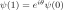
, each with spectrum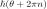
. The boundary condition is physics (a ring threaded by flux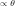
: Aharonov–Bohm). On the half line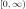
there is no self-adjoint extension: no momentum observable.Spectrum
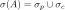
: point spectrum (eigenvalues, bound states) and continuous spectrum (scattering states). Hydrogen: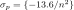
,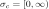
.Engineering applications
Numerical solvers discretise a self-adjoint problem into a Hermitian matrix: the choice of boundary conditions (periodic, absorbing, perfectly matched layers in photonic mode solvers) is the choice of extension, and non-self-adjoint absorbing boundaries give complex eigenvalues (leaky modes).
Pitfall
"Hermitian" (symmetric) is not enough: only self-adjoint operators generate unitary dynamics (Stone) and have a spectral decomposition.